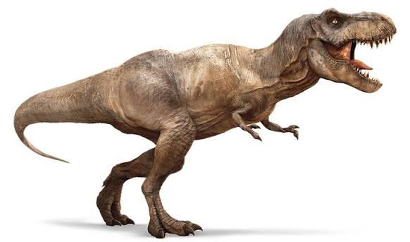

Динозаври - це група рептилій, які існували мільйони років тому. Вони були різноманітними за розміром та формою, і деякі з них були дуже великими, тоді як інші були маленькими та швидкими. Динозаври жили на всіх континентах і займали різні екологічні ніші. Найвідоміший серез них є Тиранозавр. Його фото нижче
У нас є рідке відео, де він танцює
Для будь-якого натурального числа n > 2 рівняння a n+bn=cn не має рішень при ненульових цілих числах a, b, c.
| 2017 | 2018 | 2019 | |
|---|---|---|---|
| ИТех | 93 | 97 | 98 |
| КСх | 91 | 98 | 99 |
| СПО | 96 | 94 | 97 |